DH (Digital Human) Surgical Twin: a patient-specific, real-time surgical simulator
From a patient's CT scan to a live abdomen you can operate on. Every soft organ below the diaphragm is a deformable body simulated in real time in SOFA on the GPU, for training in robotic and laparoscopic surgery.
Capabilities
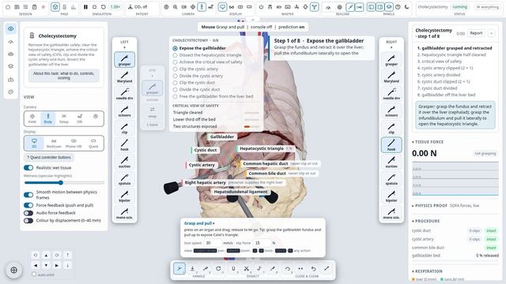
CT to patient scene
Segments the CT with the open TotalSegmentator tasks, builds organ meshes and synthesises what CT does not show: the bile ducts and cystic artery routed between the organs, the fat of Calot's triangle, the falciform ligament, omentum, bowel tubes, liver vessels and organ attachments.
Pipeline →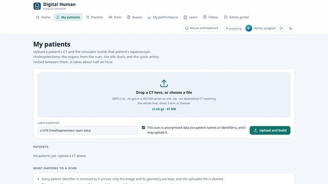
Your own patient
Upload a NIfTI file or a DICOM series. It is validated, de-identified, segmented and built into a cholecystectomy with its own port plan, previewed, and shared with your trainees.
Upload →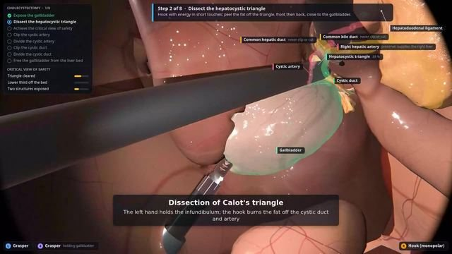
Real-time physics
Corotational tetrahedra on the GPU in double precision, frictional contact, grasping with published tear limits, blunt dissection, cutting, sutures, clips, energy, bleeding, bile leaks and breathing.
Physics →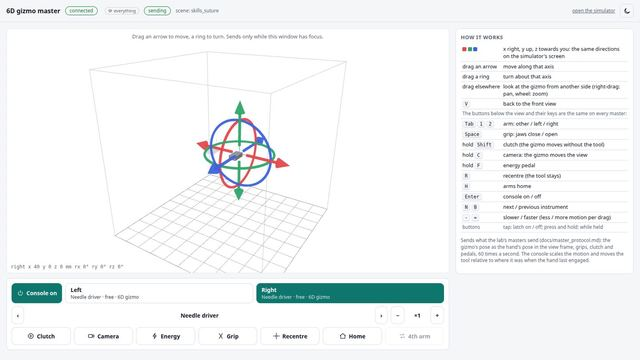
Robot console and masters
Two wristed instruments, a fourth arm and a 30° laparoscope. Drive them from a keyboard and mouse, a 6D gizmo, a phone, XR controllers, or your own device through an open master protocol with force feedback.
Console →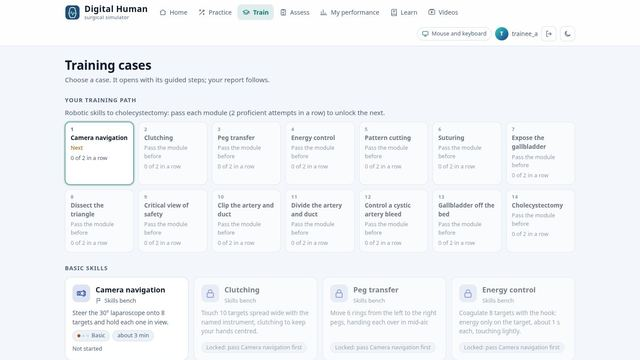
Training and assessment
Basic skills with a proficiency curriculum, scored cholecystectomy and appendectomy, short step cases with adverse events, attempt review and an instructor's cohort view.
Training →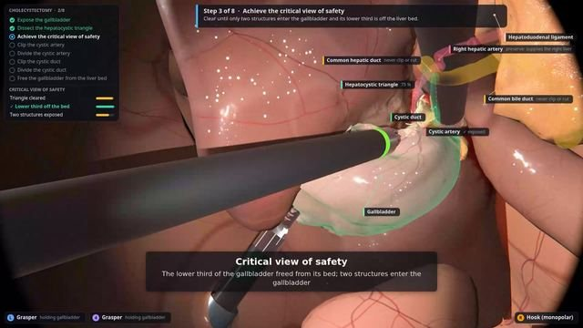
Teaching layer
Step banner and checklist, the critical view of safety's criteria, structures tinted with their hidden course, clip and scissors guides, and event notes with the points lost.
Teaching →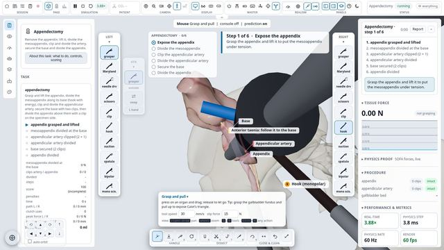
Streaming and XR
The browser draws the scene from the physics frames; phones, tablets and headsets can be streamed from the server's GPU instead. WebXR headsets work in both modes.
Streaming →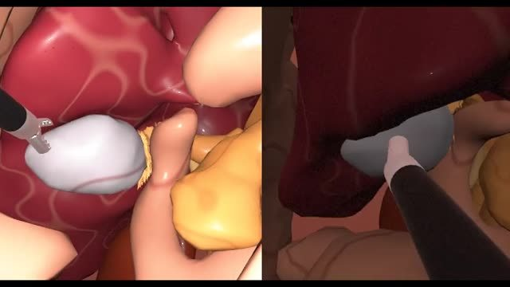
Autonomy data
A Gym-style environment and data collection in the LeRobot layout for learning-based surgical autonomy research.
Autonomy →Views
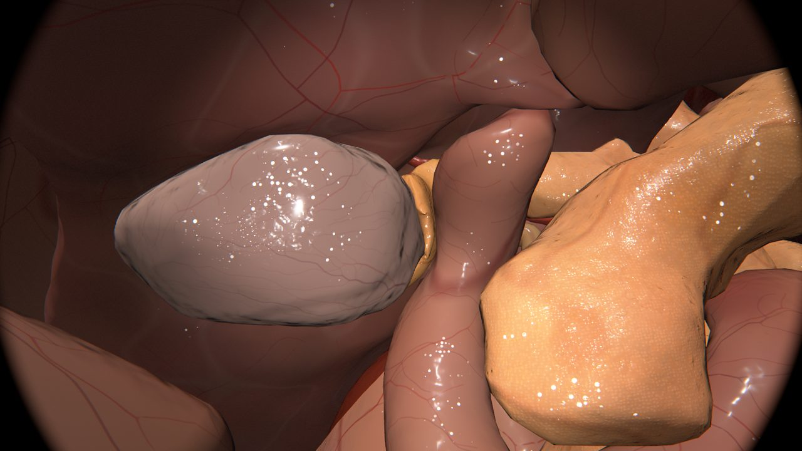
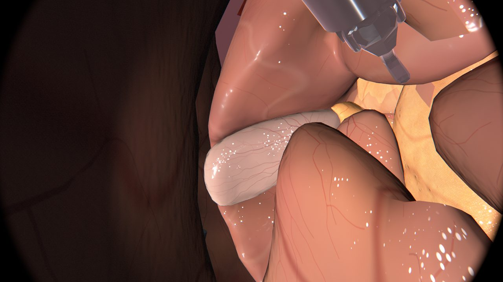
More views: the reference patient and a second (female) patient built by the same pipeline.
Performance
Measured on an RTX PRO 5000 Blackwell, Accurate quality, dt 0.03 s, every abdominal organ live:
| Scene | This release (SOFA + patched SofaCUDA) |
|---|---|
| Appendectomy, at rest | 9.3 ms a step (real time) |
| Peg transfer, at rest | 13.8 ms a step (real time) |
| Cholecystectomy, at rest / grasp-pull | 75–94 / 77–246 ms a step (about 0.1–0.4× real time) |
The real-time cholecystectomy uses our separate GPU solver plugin, which is not part of this release (with it: 14 ms a step at rest, 16 ms in the pull). Every scene still builds and runs with SOFA's own components. The recordings on this site were made with that plugin; the look is the release's.
Code release
The source code (release v0.2) will be published in the GitHub repository soon. Watch it to be notified.
It will need Linux x86-64, an NVIDIA GPU with CUDA, 16 GB of RAM (32 GB recommended) and SOFA v25.12.00 with SofaPython3; a setup script applies our SofaCUDA patches and builds everything.
Licence
The licences below are proposed, pending review by the IIT Madras IP cell. The software is source-available for non-commercial use; it is not open source in the OSI sense.
- Our code: PolyForm Noncommercial
1.0.0. Research, teaching and personal study are allowed; commercial use needs a separate licence from IIT
Madras. Licensing contact:
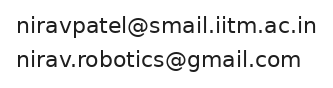
- SofaCUDA patches: LGPL-2.1, as SOFA.
- Data: no patient data ships; scene data published later will be CC BY-NC 4.0.
- Patents pending (IIT Madras).
- Third-party material and its licences: THIRD_PARTY.md in the repository.
Cite
@software{dh_surgical_twin_2026,
title = {DH Surgical Twin: a patient-specific, real-time surgical simulator on SOFA},
author = {{INSPIRE Lab, Indian Institute of Technology Madras}},
year = {2026},
version = {0.2.0},
url = {https://github.com/INSPIRELab-IITM/dh-surgical-twin}
}Acknowledgements
Built on SOFA and SofaPython3, TotalSegmentator (Wasserthal et al., 2023) and its CT dataset, LapGym's instrument meshes (Scheikl et al., 2023) and three.js. The tissue look's colours were checked against CC BY 4.0 surgical video frames from the Open-H collection; no video pixels are part of the release.